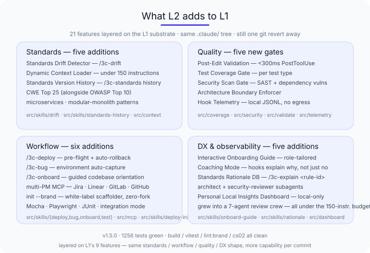
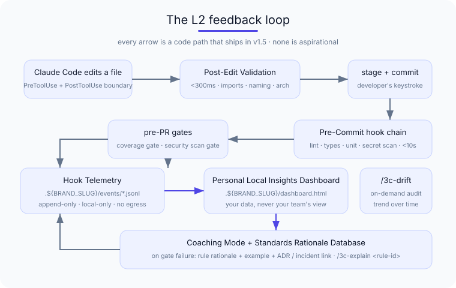

3C — what L2 ships today¶
L2 is the Automate level: every L1 standard your team agreed to is now enforced by a hook before code review, every time. L1 made conventions explicit. L2 makes them stop being aspirational.
This is the honest scope page for L2 — what you get when you upgrade from L1, and what L2 still deliberately does not do.
Install¶
npm install git+https://github.com/kgn-git/3C#v1.7.3
npx 3c setup # one shot: CLAUDE.md + rules + hooks + skills + agents + arch-check, then doctor
3c setup is a thin sequencer over the individual commands (init, rules install, hook install, skills install, agents install, arch-check init, doctor) — each still runs on its own if you'd rather step through it. Everything lands in your repo under git. The current release is v1.7.3 on the same kgn-git/3C repo as L1; existing L1/L2 deployments upgrade in place — re-run 3c setup, which is idempotent and preserves your .claude/ tree:
npm install git+https://github.com/kgn-git/3C#v1.7.3
npx 3c setup # idempotent — already-installed steps are skipped with a notice
Installing for the first time, or moving an existing project to the current release? Both routes — with the traps to avoid — are on Get started.
Reversal posture is unchanged from L1
git revert of one PR still removes 3C from your project. L2 adds local JSONL telemetry events to .3c/events/ and a SQLite config file — both gitignored, both reversible by removing the directory. No daemon, no global install, no workstation state to unwind.
What's new in L2 — the 21 features¶
L2 brings 21 features layered on top of L1's 9. Grouped by the layer they extend:

.claude/ tree, same git revert reversal, more capability per commit.Standards layer — five additions
- Standards Drift Detector (
/3c-drift) — audits the codebase against the rules you've defined and reports trend over time. Catches regressions that the pre-commit gate didn't see because the rule landed after the code. - Dynamic Context Loader — loads only the rules relevant to the file types and directories under work, so the 150-instruction budget holds even as your rule library grows past it.
- Standards Version History (
/3c-standards history,/3c-standards as-of <date>) — git-native timeline of every rule change with author, date, PR link, and reconstruction of the effective rule set on any past date. - Architecture pattern library extension —
microservicesandmodular-monolithpacks alongside L1's clean-architecture / hexagonal / layered-mvc. - Security pack extension —
cwe-top-25alongside L1's OWASP Top 10, with mappings between the two so reviewers see both lenses at once.
Quality layer — five new gates
- Post-Edit Validation — PostToolUse hook firing the moment Claude Code finishes an edit, validating imports, naming, and architectural boundary direction before the change is even staged.
- Test Coverage Gate — pre-PR hook enforcing coverage thresholds per test type (unit / integration / contract). Configurable; off by default.
- Security Scan Gate — SAST + dependency-vulnerability scan per commit, with severity thresholds. Refuses the commit on critical findings; warns and proceeds on lower severities.
- Architecture Boundary Enforcer — static analysis of dependency direction per
.3c/architecture.yaml. Catches the "module A reaching into module B's internals" pattern at commit time. - Hook Telemetry — every hook run writes a
.3c/events/*.jsonlevent with pass/fail, timing, and rule attribution. The L2 substrate for everything observability-related downstream — local-only, no egress at L2.
Workflow layer — six additions
- Deployment Skill (
/3c-deploy --env <name>) — runs team-defined pre-flight checks, deploys, runs health check, auto-rolls back on health failure. Production environments require--yesconfirmation. - Bug Report Skill (
/3c-bug) — captures the environment (OS, runtime, project state, recent commits, scrubbed env vars) into a structured report — no more "works on my machine" reproduction archaeology. - Onboarding Skill (
/3c-onboard) — guided codebase orientation with per-developer progress tracking. Pause/resume across sessions; local state, no cloud account needed. - Multi-PM MCP Adapter —
/3c-create-issuenow routes to Jira Cloud / Linear / GitLab Issues alongside the L1 GitHub path. Token via OS keychain only, never cached, never returned in tool output. init --brandwhite-label scaffolder —npx 3c init --brand="Acme"plusnpx 3c skills installcopies the skills and agents in under your own slash prefix (/acme-*) against the upstream framework source — the files land in your repo under git, no fork. See deploying with custom branding for the full two-tier identity model and adoption flow.- Test framework extension — Mocha / Playwright / JUnit recognised alongside L1's Jest / Vitest / Pytest, plus a new integration-test mode for
/3c-test.
DX & observability layer — five additions
- Interactive Onboarding Guide (
/3c-onboard-guide --role <frontend|backend|devops>) — role-tailored variant of the onboarding skill. Same pause/resume, role-specific module sequence. - Coaching Mode for Juniors — pre-commit hooks that fail on a rule violation also explain why: the rule's rationale, an example of the right shape, a link to the relevant ADR or incident. Turn off in
.3c/coaching.yamlonce the team's past needing it. - Standards Rationale Database (
/3c-explain <rule-id>) — structured "why" repository linking every rule to its origin, ADR, incident reference, or research citation. The thing the coaching-mode hooks read from. - Extended starter subagents —
architectandsecurity-reviewersubagents alongside L1'scode-reviewerandtest-author. All four still under the 150-instruction CS-02 budget (npm run cs02audits it). - Personal Local Insights Dashboard — local-only
.3c/dashboard.htmlshowing your own hook telemetry: which rules fire most for you, how often your changes pass review on first try, how the coaching mode is helping. The local mirror of what the L3 team backend will roll up across the team.
The L2 gate chain — what runs before a code review¶

In a typical L2-adopting team's commit lifecycle, 3C runs four gate types automatically:
- PostToolUse — Post-Edit Validation (
<300ms) — the moment Claude Code finishes an edit, validates imports, naming, and architectural-direction rules against the relevant file. - PreToolUse — Pre-Commit Hook (
<10s) — lint, types, unit tests, secret scan, and (if coaching mode is on) rationale-linked explanations for failures. - Pre-PR — Coverage Gate + Security Scan Gate (
<60s typical) — coverage thresholds per test type; SAST + dependency vulnerabilities. - Standing — Drift Detector (on demand via
/3c-drift) — audit current code against current rules to catch regressions the gates missed.
Each gate is independently disable-able. Each writes a JSONL event regardless of pass / fail / skip — so the picture is complete even when a gate is bypassed under /3c-bypass --reason="...".
The multi-agent crew — your team's development process, automated¶
The gate chain enforces standards on every commit. The multi-agent crew, added to the L2 surface after v1.5, goes one layer up: it automates the process your team runs around the code — issue enrichment, planning, test-first implementation, multi-lens review, and delivery — as a panel of specialist agents coordinated by explicit orchestrator skills. It is the part of senior-engineer judgement that usually lives in people's heads, written down and made repeatable.

Eight specialist agents. Each is a focused, read-only reviewer that Claude Code auto-selects by description and runs in its own context:
architect— boundary direction, coupling, ADR adherence.code-reviewer— correctness, readability, team conventions.security-reviewer— the OWASP / CWE lenses, secret and trust-boundary checks.test-author— test coverage and convention adherence (the one writer on the panel).product-owner— scope, priority, and maturity-level fit.ux-expert— screen-level usability, accessibility, and UI copy.qa-reviewer— acceptance-criteria traceability and edge cases.journey-architect— customer-journey reachability: can a user still reach every capability and recover from every state.
The first four shipped with L1/L2; product-owner, ux-expert, qa-reviewer, and journey-architect complete the eight-agent crew. All install under your slug (3c-architect, or acme-architect after a rebrand) and stay within the 150-instruction CS-02 budget (npm run cs02 audits it).
Three orchestrator skills drive them. These are explicit-invocation only — you type them; Claude never auto-runs them:
/3c-review-board— convenes the panel on a change, then reconciles their findings deterministically into one verdict: blocking, advisory, or clean. It de-duplicates the findings agents agree on, surfaces where two agents disagree on severity for a human to settle, and ranks the rest. The reconciliation is tested code (3c reconcile), not a model's free-text summary — identical inputs always produce the same verdict./3c-project-manager— drives one issue through the whole pipeline: enrich → plan → test-first implementation → review board → ship. It is checkpointed — it confirms before creating a branch or a PR, and it never auto-merges, force-pushes, or bypasses a hook./3c-programme-manager— coordinates delivery across the projects in one workspace (a monorepo's packages, or several folders in one checkout). It sequences work in dependency order, runs the project-manager pipeline per project with a checkpoint between projects, and maintains a provenance-bearing dependency ledger at.3c/dependencies.yaml.
An optional /3c-retrospective skill captures what worked and what didn't after you ship — a suggestion, never a gate. npx 3c doctor verifies the crew is installed coherently — all eight agents present, all three orchestrators wired, no stale references — so a half-installed crew shows up before you lean on it.
This is the L1→L2→L3 arc made concrete: L1 wrote the standards down, L2 enforced them at the gate, and the crew runs the review and delivery process a senior engineer would run by hand. It stays honest about its limits. Every verdict is advisory — a human still decides. The orchestrators never touch git without confirmation. And it is fully local: no backend, and no nested agents — the platform runs each specialist one level deep from a main-thread skill. Rolling these per-change verdicts up across the team is the L3 observability story — see maturity model.
What L2 still does NOT do¶
L2 keeps the L1 honesty discipline: it under-claims, and it names limits.
- No backend, no telemetry egress. Every L2 event is local JSONL on the developer workstation. There is no 3C-hosted service, no opt-in tier, no telemetry-to-vendor pipe. The L3 team-backend story is mapped — see maturity model — but at L2 your data does not leave the workstation.
- No cross-team observability yet. The personal local insights dashboard shows your hook telemetry. Roll-up to team / repo / programme level is L3 work.
- No policy-as-code or governance-as-code. Standards are still defined as rules + skills + agents, edited by humans, reviewed via PR. The L4 "governance that adapts to complexity" story is horizon — not L2.
- No compliance / regulatory framing. The compliance business case is parked — see
strategy/parked/compliance-business-case.md. L2 is a developer-productivity and team-quality layer, not a regulatory evidence pack. - No vendor lock-in added at L2. Still MIT, still Agent Skills standard, still git-installable, still removable with one
git revert.
How to adopt L2¶
If you're already at L1, the upgrade is a focused half-day:
npm install git+https://github.com/kgn-git/3C#v1.7.3— pin the new version.npx 3c init— idempotent; re-runs against your existing.claude/tree, refreshing CLAUDE.md.npx 3c skills install && npx 3c agents install— re-copy the workflow skills and the crew agents under your slug (picks up the new crew orchestrators and theproduct-owner/ux-expert/qa-revieweragents).npx 3c hook install— re-registers the PreToolUse + PostToolUse hooks (you may need to confirm the diff once).npx 3c doctor— confirm the result is coherent: every skill and agent prefixed, both hooks present, no stale references.- Decide what gates to turn on first. We recommend in this order: Post-Edit Validation → Coaching Mode → Drift Detector → Coverage Gate → Security Scan Gate. Each can be enabled independently in
.3c/hooks.yaml. - Run an L2 adoption sprint — same one-week shape as L1, just measuring different deltas. The four metrics that prove L2 is working: pre-PR gate pass-rate, post-edit validation findings per AI-authored diff, coaching-mode rationale link-throughs, drift-detector audit delta week-over-week.
If you're new to 3C, start at what L1 ships — L1 is a fine place to stay for a long time, and L2 layers on it cleanly when you're ready.
See it from your seat¶
- A developer's view of L2 → for developers
- An engineering leader's view → for engineering leaders
- A security architect's view → security & code safety
What we're learning
The L2 sprint shipped 21 features across 6 sprints with 1256/1256 tests green at merge. The full per-feature handover record is in docs/Handover-*.md in kgn-git/praise — every decision is traceable. If you're evaluating, the rationale is there: start a discussion.